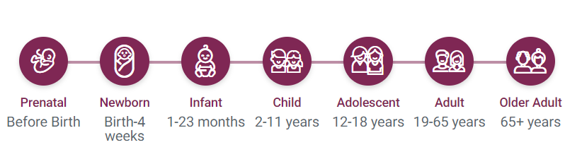
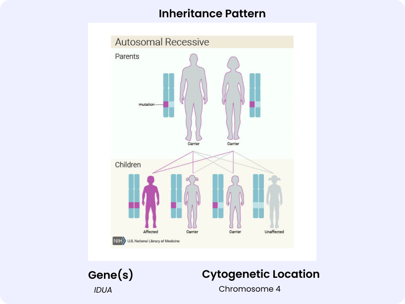

Contents
Clinical symptoms


Recent Research:
Resources:
MPS I
Cloudy corneas
Deafness
Thick, coarse facial features with low nasal bridge
Heart valve problems
Intellectual disability that gets worse over time in severe MPS I
Inability to fully open the fingers (claw hand)
Halted growth
Joint disease, including stiffness
Timeline of disease onset

Source: National Center for Advancing Translational Sciences
*Coloured age: Disease onset
Where it all started?
Click for Inheritance Pattern

α-L-iduronidase (IDUA) activity elevation of glycosaminoglycan levels,
targeted deletion/duplication by RT_PCR, MLPA and sequencing[1]
ERT, Hematopoietic stem cell transplantation
Therapeutics
Diagnostics
Prevalence
(India)
Prevalence
(Global)
-
1. Clarke, L. A. (1993). Mucopolysaccharidosis Type I. In M. P. Adam, G. M. Mirzaa, R. A. Pagon, S. E. Wallace, L. J. Bean, K. W. Gripp, & A. Amemiya (Eds.), GeneReviews®.
University of Washington, Seattle. http://www.ncbi.nlm.nih.gov/books/NBK1162/


GENTIGS
GENTIGS is a databse
Gauchers disease
Fabry
Pompe
MPS I
MPS II
MPS IV
MPS VI

Blood Disorder
Storage Disorder
Neurological Disorders
Others
© Tata Institute for Genetics and Society
Dashboard development & design:
Samruddhi Walaskar
Concept & lead:
Dr. Surabhi Srivastava
Data compilation:
RGD Team
For queries & feedback:
surabhi.srivastava@tigs.res.in
Aditional links-
Online Mendelian Inheritance in Man(OMIM)
-
Organization for Rare Diseases India(ORDI)
-
Indian Policy for Rare Genetic Disorders
-
TIGS Work
-
Indian Society of Hematology and Blood Transfusion (ISHBT)